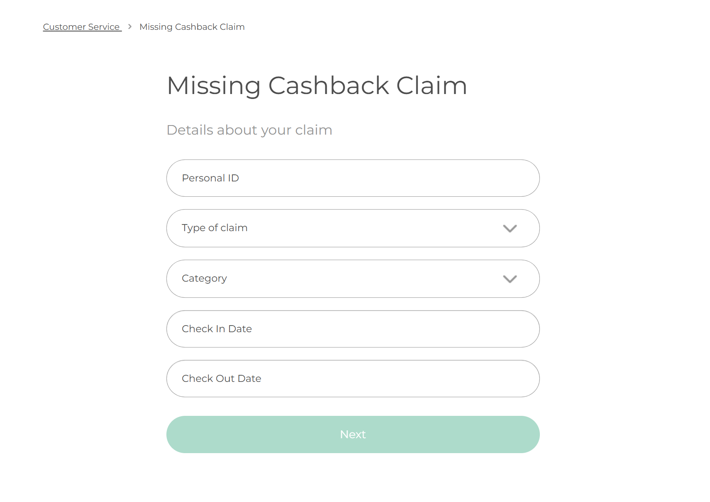
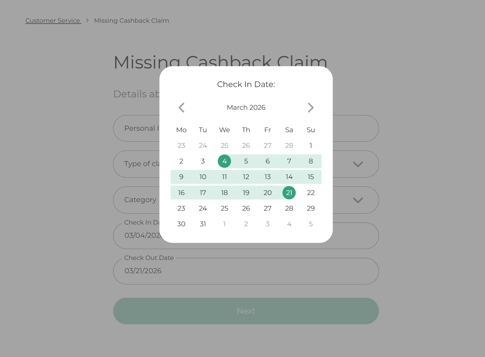

A project to redesign the Missing Cashback claims system for TopCashback, improving user experience and accessibility.
See the Pen Redesigned Claims Journey – main by Design/UX (@tcbdesignux) on CodePen.
See the Pen Redesigned Claims Journey – datepicker by Design/UX (@tcbdesignux) on CodePen.

